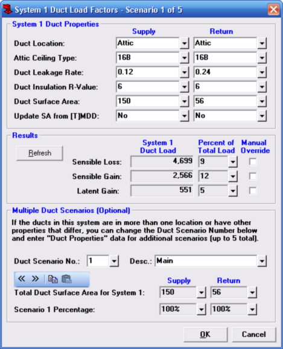

Duct Load Factors (System Data Window) |
  
|
Duct Load Factors (System Data Window) |
|
Duct Load Factors: This input on the System Data window displays the word "None" when the total of the duct surface areas is zero. It says, "Data" when at least one duct surface area is greater than zero. Click the dropdown help button beside the input to open the Duct Load Factors dialog, shown below. The duct loads are calculated according to the methodology described in Manual J Addendum C.

Duct Location: Specifies the kind of area that the ducts run through, such as Attic or Basement. If you select Attic, be sure to also specify the Attic Ceiling Type.
Attic Ceiling Type: When the Duct Location input is set to Attic, specifies the attic roof category. The categories each have their own approximate ambient temperature in the summer and winter.
Duct Leakage Rate: Specifies the leakage rate in CFM/sq.ft of the ductwork in the specified location. The rate you enter is multiplied by the duct surface area to give a leakage CFM.
Duct Insulation R-Value: Specifies the R-value of the insulation around the exterior of the ducts.
Duct Surface Area: Specifies the square footage of the supply or return ducts in the current system. For a very rough estimate of surface area, click the dropdown help button beside this input to open the Duct Surface Area Calculator dialog. A better way is to use Manual D Ductsize or Tabular Manual D Ductsize (see the description for the Update SA from [T]MDD input, below) and let the program automatically calculate the duct surface areas. Another good way is to calculate the surface areas by hand using these formulas.
Update SA from [T]MDD: Specifies whether you want to update the duct surface area for the current scenario automatically from ducts created either with graphic Manual D Ductsize (MDD) or Tabular Manual D Ductsize (TMDD). If you want to enter the duct surface area directly, select "No."
Refresh Button: After you change any of the Duct Properties inputs above, performs a recalculation and shows the results in the boxes to the right. It is not necessary to click this button, since once you click OK all of your changes will take effect.
Sensible Loss, Sensible Gain, Latent Gain: Displays the amount of duct load for the current system, based on the values you entered above for Duct Properties. You can click the Calculate button to refresh this display.
Manual Override: When any one of these boxes checked, it enables the Percent of Total Load box for that row, and lets you enter a percentage that you want the duct load to be of the total load. For example, if you checked the box on the Sensible Loss row, then entered 10% for the sensible loss, if your system had 9,000 Btuh of sensible loss due to everything other than ductwork, the program would add 1,000 Btuh of duct sensible loss, which would be 10% of your total loss of 10,000 Btuh.
Duct Scenario No.: Displays the current scenario number. If ducts in this system all have the same properties and run through only one kind of location, you only need to fill in data for duct scenario number 1. If the ducts have varying properties or run through multiple locations, you can fill in up to 5 different duct scenarios.
Description (Desc): Specifies the name you want to give the current scenario. If ducts in this system all have the same properties and run through only one kind of location, you only need to fill in data for duct scenario number 1, which by default is called "Main." If the ducts have varying properties or run through multiple locations, you can fill in up to 5 different duct scenarios and give each one its own description.

 Go to Previous Scenario, Next Scenario: Decreases or increases the number in the Duct Scenario Number input, allowing you to edit other scenarios if needed.
Go to Previous Scenario, Next Scenario: Decreases or increases the number in the Duct Scenario Number input, allowing you to edit other scenarios if needed.
Copy Duct Scenario: Copies all the data in the Duct Properties inputs at the top of this window to a clipboard so you can paste it into a different scenario.
Paste Duct Scenario: Pastes the Duct Properties data from a clipboard into the current scenario. This button is only available after you have clicked the Copy Duct Scenario button since opening the Duct Load Factors dialog.
Total Duct Surface Area for System 1: Displays the total surface area entered for all of the scenarios in the current system.
Scenario 1 Percentage: Displays the percentage of duct surface area in the current scenario to that of the total of all scenarios in the system.
OK Button: Saves your changes on this dialog to the project and closes the dialog.
Cancel Button: Closes this dialog without making any changes to the project.